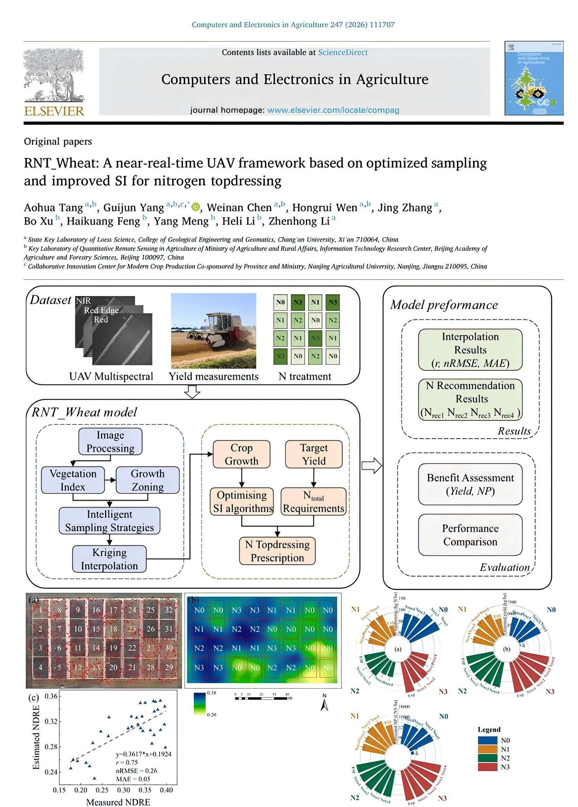

多光谱无人机近实时冬小麦追肥算法

点击图片查看全览
简短介绍：氮素是冬小麦生长发育和产量形成的关键营养元素，其科学管理对于提升氮肥利用效率（NUE）、保障粮食安全及减少环境污染具有重要意义。 然而，传统施肥方式依赖经验确定地块及区域整体施肥方案，常忽略地块内部作物长势变异，导致作物养分供需不匹配，最终影响作物产量品质； 利用无人机遥感开展作物精准施肥决策已被广泛采用，但现有养分决策存在数据处理效率低难以实现近实时决策，决策算法缺乏考虑目标或实际产量等约束性因素，难以支撑无人机“因产因苗”变量施肥作业。 针对上述问题，本研究提出了一种基于无人机多光谱遥感的近实时氮肥追施框架—RNT_Wheat，以实现冬小麦拔节期的高效变量施肥决策。该方法主要包含两个核心模块： （1）构建了一种基于非拼接影像的田块作物长势智能采样，利用光谱特征进行作物长势分区，通过质心采样及地理空间插值替代传统影像拼接流程，实现田块内作业分区生成； （2）提出了一种改进的充足指数（SI）追肥决策算法，融合目标产量驱动的氮素平衡模型与作物长势信息，增强氮肥推荐的适应性与准确性。 本研究不仅在方法层面提升了冬小麦氮肥管理的精度与效率，还在流程上构建了“无人机快速感知-模型近实时决策-处方图自动生成-农机变量作业执行”的协同联动无人机遥感与智能施肥技术体系， 为小麦智慧农作发展了新的技术路径，大幅提升了施肥作业精度及效率。
发表期刊：Computers and Electronics in Agriculture IF：8.9（中科院一区Top）
发表时间：2026.06